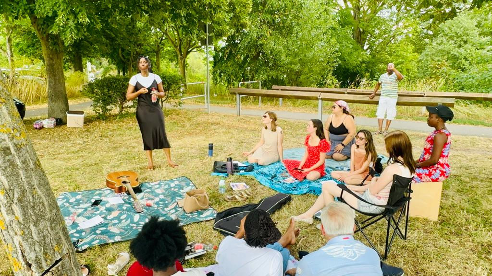
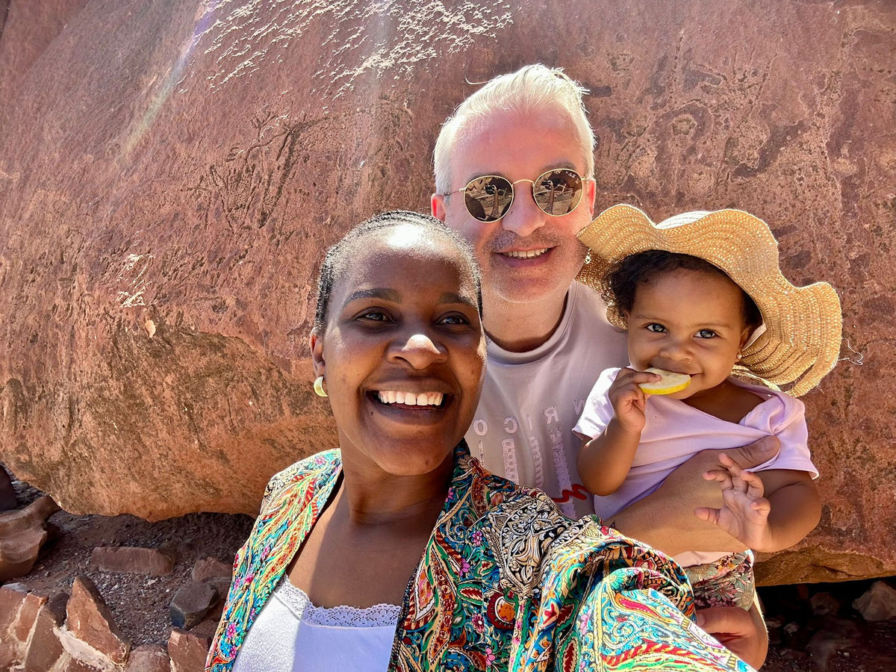
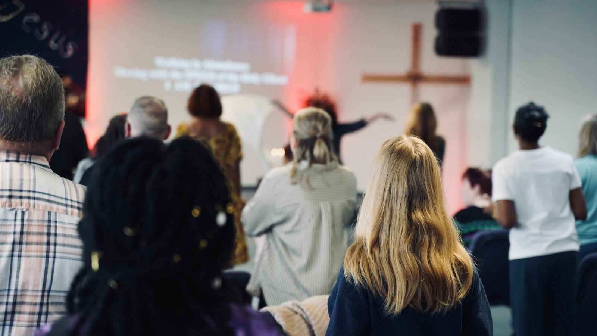
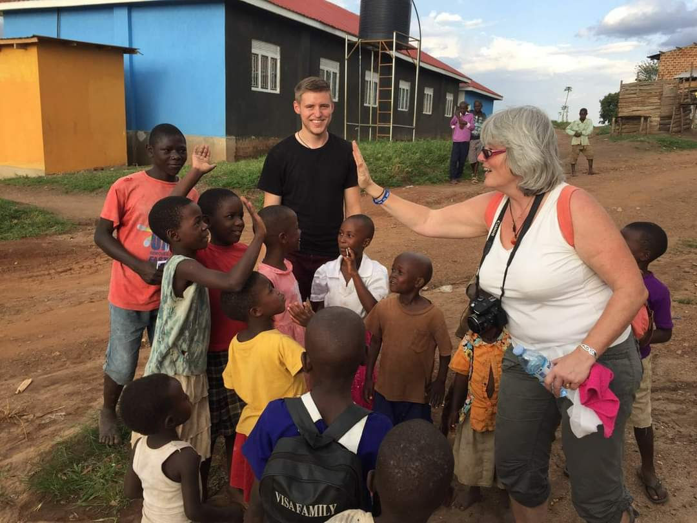

Where Freedom Reigns.
Eine internationale Kirche in Würzburg – ein Zuhause für Menschen aus vielen Ländern und Kulturen.
Finde deinen Weg zu uns.
Ob vor Ort, online oder unter der Woche – es gibt viele Möglichkeiten, Teil der Familie zu sein.
Entdecke mehr.
Taufen, Einsätze in der Stadt, Missionen und vieles mehr – sieh, was Gott bei uns tut.
Taufe
Bereit für den nächsten Schritt? Sprich uns an.

Straßenevangelisation
Einmal im Monat teilen wir die gute Nachricht in der Stadt.

Missionen
Unsere Partner auf den Philippinen, in Uganda und weltweit.

Kaffeezeit
Nach dem Gottesdienst bleiben wir gern noch zusammen.

Unser Team
Lerne die Menschen hinter dem FWC kennen.

Seit 1974
Unsere Geschichte – von Gerbrunn in die Ohmstraße.
Neueste Predigten.
Verpasst? Schau dir jede Botschaft jederzeit an.
Ein Platz für dich und deine Familie.
Wachse im Glauben, finde Freunde und entdecke, wo du dienen kannst.

Chosen GenerationJunge Menschen mit Feuer für Jesus.
Mehr erfahren Kinderkirche
KinderkircheKinder entdecken Gottes Liebe.
Mehr erfahren Lobpreis
LobpreisIm Lobpreis liegt Macht.
Mehr erfahren
Team FStarke Familien, starke Gemeinschaft.
Mehr erfahren Heilung & Befreiung
Heilung & BefreiungWir glauben an die Kraft des Gebets.
Mehr erfahrenWann wir uns treffen.
Was dich erwartetEinblicke.
Mehr auf Instagram






Bleib verbunden.
Dürfen wir für dich beten?
Was dich auch bewegt – du musst es nicht allein tragen. Melde dich, wir beten vertraulich mit dir.